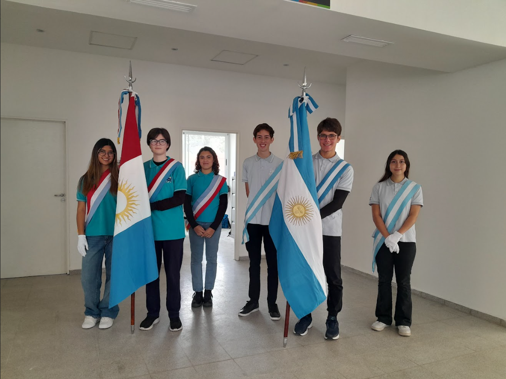

Escuela Experimental con Énfasis en TIC
ProA con Orientación Desarrollo en Software


Las Escuelas ProA, creadas por el Ministerio de Educación de la Provincia de Córdoba en 2014, surgen como una respuesta a la creciente importancia de las Tecnologías de la Información y la Comunicación (TIC) en todos los aspectos de la vida diaria.
Estas escuelas secundarias están diseñadas para ofrecer a los estudiantes una formación avanzada, con un enfoque centrado en el desarrollo de software y el uso de herramientas tecnológicas, promoviendo así un aprendizaje acorde a las necesidades del mundo actual.
El plan de estudios de las Escuelas ProA tiene como objetivo formar a jóvenes en competencias tecnológicas clave, con un enfoque integral que abarca tanto el desarrollo intelectual como el afectivo y social. Los estudiantes egresan con el título de Bachiller en Desarrollo de Software, lo que les permite contar con una base sólida para enfrentar los desafíos del entorno digital.

Las Escuelas ProA ofrecen una jornada extendida, con una carga horaria mínima de 8 horas diarias. Este tiempo incluye no solo las materias troncales como Matemática, Lengua, Biología y Geografía, sino también espacios dedicados a la aplicación práctica del conocimiento a través de Clubes de Ciencias, Arte y Deportes, así como un taller de Inglés Aplicado. Además, cada estudiante cuenta con tutorías semanales para mejorar su aprendizaje en las materias principales

Las Escuelas ProA buscan formar a estudiantes que sean proactivos, creativos e innovadores. El objetivo es que cada egresado esté preparado no solo para el mundo laboral, sino también para continuar su formación en áreas tecnológicas o cualquier otro ámbito académico que elijan. Se enfatiza el aprendizaje autónomo, la capacidad de resolver problemas complejos y la adaptabilidad a los cambios tecnológicos. El entorno educativo de las ProA está diseñado para acercar la cultura escolar a las culturas juveniles actuales, integrando el uso de tecnologías digitales y herramientas personalizadas que se adaptan a diferentes estilos y ritmos de aprendizaje. Este enfoque promueve la inclusión y la participación activa de los estudiantes en su propio proceso de aprendizaje.

Los espacios curriculares están organizados para que los estudiantes no solo adquieran conocimientos específicos, sino que también desarrollen habilidades como el pensamiento crítico, la capacidad de trabajar en equipo y la creatividad.
Las tutorías son una parte fundamental del proceso educativo, ya que permiten una atención personalizada por parte de los docentes en áreas clave como Matemática, Lengua y Literatura, Inglés y Ciencias Naturales, ayudando a los estudiantes a superar dificultades y afianzar sus conocimientos.